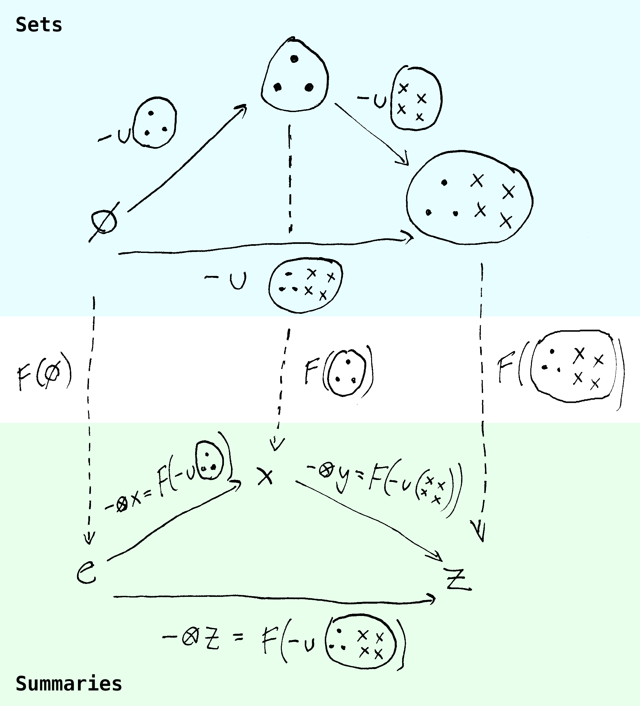

The Fabric of Interactive Graphics
Big thanks…
- The University of Auckland Department of Statistics
- Dr. Filip Krikava (CTU), Antony Unwin, the statistical graphics and R community
- My partner Nela, family, friends
Topic evolution
- Master’s thesis: implement a portable interactive data visualization library in JS for R, building on
iplots(Urbanek and Theus 2003; Urbanek 2011) - Wanted to incorporate Grammar of Graphics (GoG, Wilkinson 2012)
- Also had interest in functional programming at the time
- Realized there are parallel concerns
- This eventually lead me to category theory (Fong and Spivak 2019)
The motivating problem…
Split in interactive graphics
- “Classical” IDV systems (~1980-2010s)
- Standalone apps
- Deep interactivity (linked selection, parametric interaction, tours,…)
- Less flexible, nominal style: scatterplot, barplot, …
- Modern web-based IDV systems (2005-current)
- Focus on dashboards, presentation
- Highly customizable but less interactivity out-of-the-box
- Compositional style: plot with point geometry and continuous x- and y- encodings…
Why is it so hard to combine flexibility with deep interactive features?
The Grammar of Graphics and independence
- Plots composed out of modular components (Wilkinson 2012):
- Data, aesthetics, stats, geoms, scales, coordinate systems
- Components treated as (semi-)independent
- “Lego bricks”, mix-and-match
- Particularly in software implementations (e.g.
ggplo2, Wickham 2016;altairVanderplas et al. 2018, etc…)
- Powerful, however, are there limits? Particularly when it comes to interactivity?
Limits of independence
“This system cannot produce a meaningless graphic, however. This is a strong claim, vulnerable to a single counter-example. It is a claim based on the formal rules of the system, however, not on the evaluation of specific graphics it may produce.” (Wilkinson 2012, 15)
“Some of the combinations of graphs and statistical methods may be degenerate or bizarre, but there is no moral reason to restrict them.” (Wilkinson 2012, 112)
Let’s start from some definitions…
Plots as maps (functions)
- A plot is a map from data to a graphical display (computer screen/paper):
\[\text{Data} \to \text{Graphics}\]
- Can this map be arbitrary? No
- Draw a single red square regardless of data - valid function but bad plot
- Plots can be misleading representations (Tufte 2001; Cairo 2014)
- Faithful plots “in the wild” exhibit many regular features
- Interactivity adds additional constraints
Regular plots
- Useful definition (?): think about geoms as sets, plots as partitions:
- A surjective collection of disjoint subsets
- = Each point, bar, or line represents a distinct set of cases/rows, and together the objects cover the whole data space (bijection)
\[\text{Data subsets} \to \text{Geometric objects}\]
- Some exceptions:
- 2D KDE plots (multiple isopleths map to the same datapoints)
- Graphical deficiencies (e.g. overplotting)
- However, covers vast majority of classic plots
Plots as partitions and interactivity
- The (bijective) partition model is well-suited for interactive graphics
- Provides clear visual mapping in linked selection:
- If I click a bar in a plot, only that bar gets highlighted
(not the case with non-disjoint data subsets)
- If I click a bar in a plot, only that bar gets highlighted

- Also useful for e.g. querying: geom/subset information is independent
Plots, summaries, and aesthetics
- We rarely plot raw data: instead, we often summarize/aggregate
- Also encode the summaries into aesthetics (scales/coord. systems)
- Therefore, the full mapping is a composition of several maps:
\[\text{Data subsets} \to \text{Summaries} \to \text{Aesthetics} \to \text{Geometric objects}\]
- The domains/codomains of these maps often have structure which the maps may or may not preserve
Example: Stacking 1
- The data partition can have a hierarchical structure
- = Data subsets made up of smaller subsets
- E.g. stacked bar made up of segments, pie chart
- Not purely visual - segments represent data information
- The map should preserve this underlying structure
- I.e. aggregation and encoding also need to align with the hierarchical structure
Example: Stacking 2
- Suppose:
\[\qquad \text{Bar subset} = \text{Gray subset} \cup \text{Blue subset}\]
- We want:
\[\qquad \text{Bar} = \text{Stack}(\text{Gray segment}, \text{Blue segment})\]

Example: Stacking 3
- The mapping should preserve salient visual properties
- E.g. bar height:
\[\text{Height(Plot(Bar subset))} = \text{Height(Stack(Plot(Blue subset), Plot(Red subset)))}\]
- Not always the case:
- “Stacking bars that represent counts, sums, or percentages is fine,
but a stacked bar chart where bars show average values is generally meaningless.” (Wills 2011, 112) - Why is it meaningless? And when?
- “Stacking bars that represent counts, sums, or percentages is fine,
Category theory and functors
- Category theory is an area of math concerned with structure and composition (Fong and Spivak 2019)
- Fundamental concept: a functor, generalization of structure-preserving maps
- Functors preserve function composition:
\[F(f ; g) = F(f) ; F(g)\]
Functors and visualization
- In our case, we can think of \(f\) and \(g\) as union with some fixed set
- E.g. \(f(x) = x \cup A\), and \(g(x) = x \cup B\)
- \(x\) can be \(\varnothing\)
- \(F\) is the aggregation (and encoding) map. Then:
\[F(f ; g) = F(f) ; F(g)\]
- Translates to:
\[\text{plot}(\text{summarize}(A \cup B)) = \text{plot}(\text{summarize}(A), \text{summarize}(B))\]

Functors, groups, monoids, and beyond
- Functors let us reason about structure-preserving plots
- Depends on what structure we want to preserve:
- Set union: monoids (set + binary associative operation + empty element)
- Parallel computing and RDB research (Parent 2018; Fegaras 2017; Lin 2013; Gibbons et al. 2018)
- Set difference: groups (monoid + inverse)
- Set union: monoids (set + binary associative operation + empty element)
- Practical impact on interactive graphics:
- Monoids for comparing subsets, single-subset selection (\(A\) vs \(A \cup B\))
- Groups for comparing disjoint sets, multi-group selection (\(A\) vs \(B\))
- Other properties of set operations: monotonicity, commutativity, etc…
Closing thoughts…
- What we can do with a plot is determined by what the plot is
- Plot components are not independent, but have (hierarchical) dependencies
- Can be formally described using category theory (“missing link”)
- Most novel contribution, many interesting applied problems as well:
- Features: interactive and otherwise
- Data visualization pipeline: reactivity, paritioning, summaries, scales, etc…
- Architecture and programming paradigms